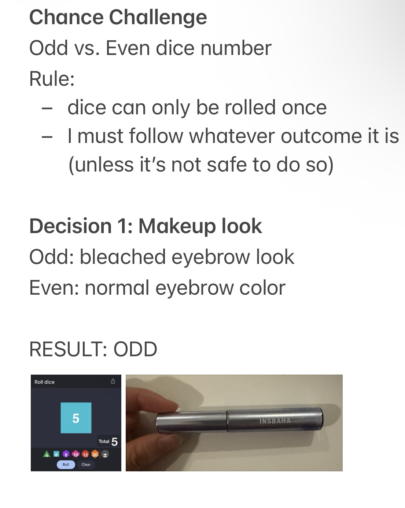
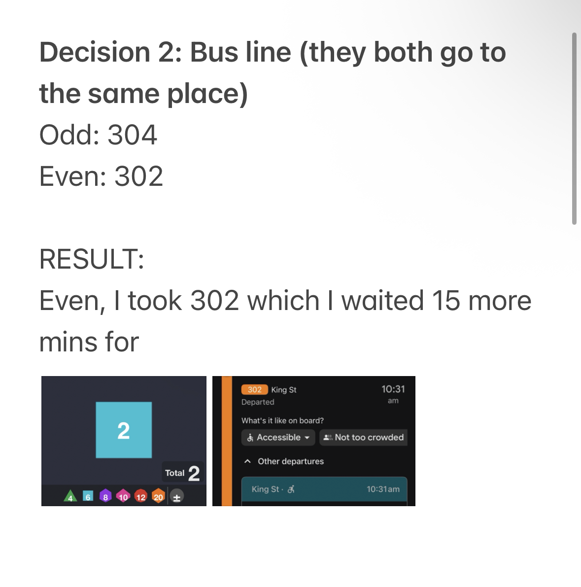
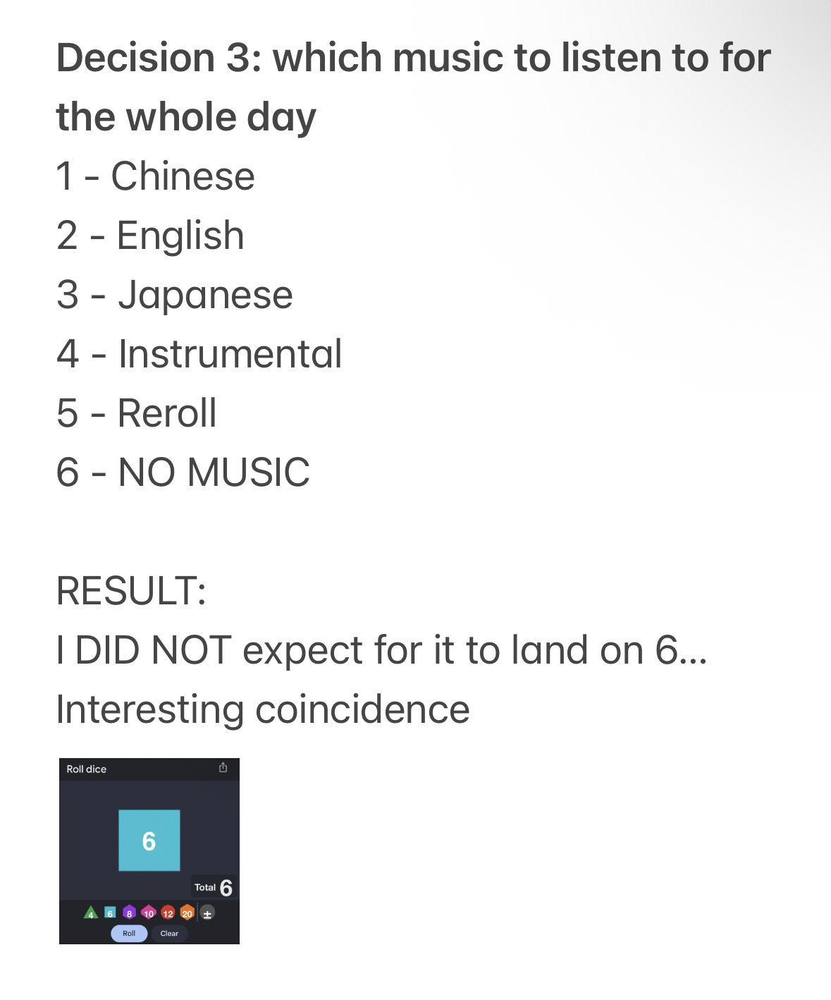
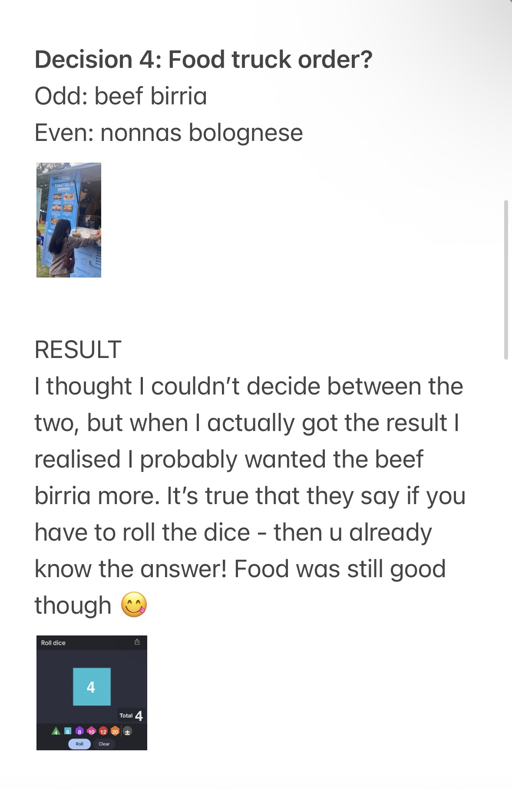
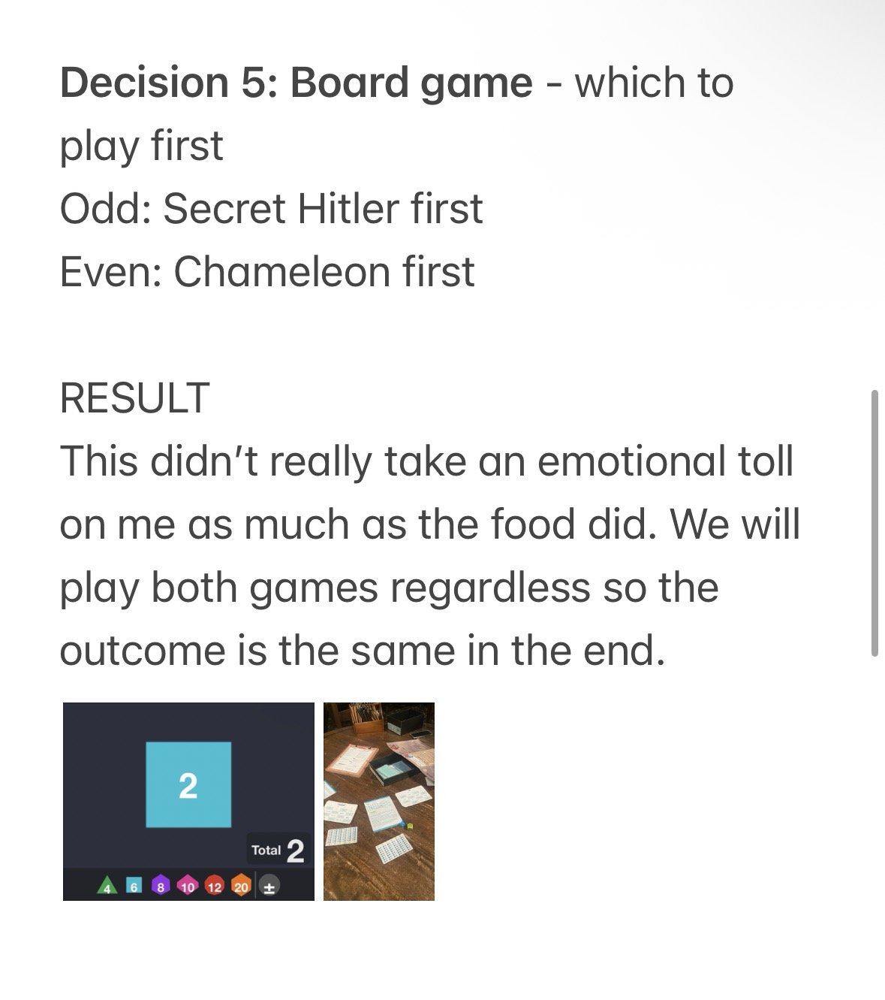
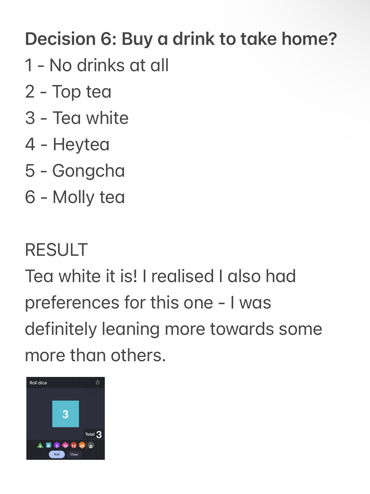
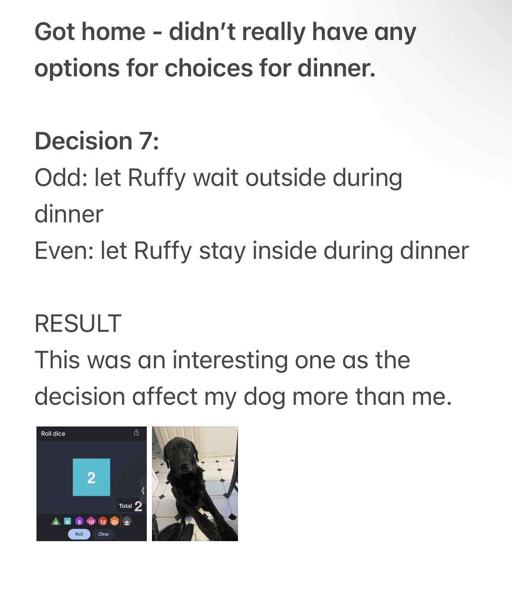
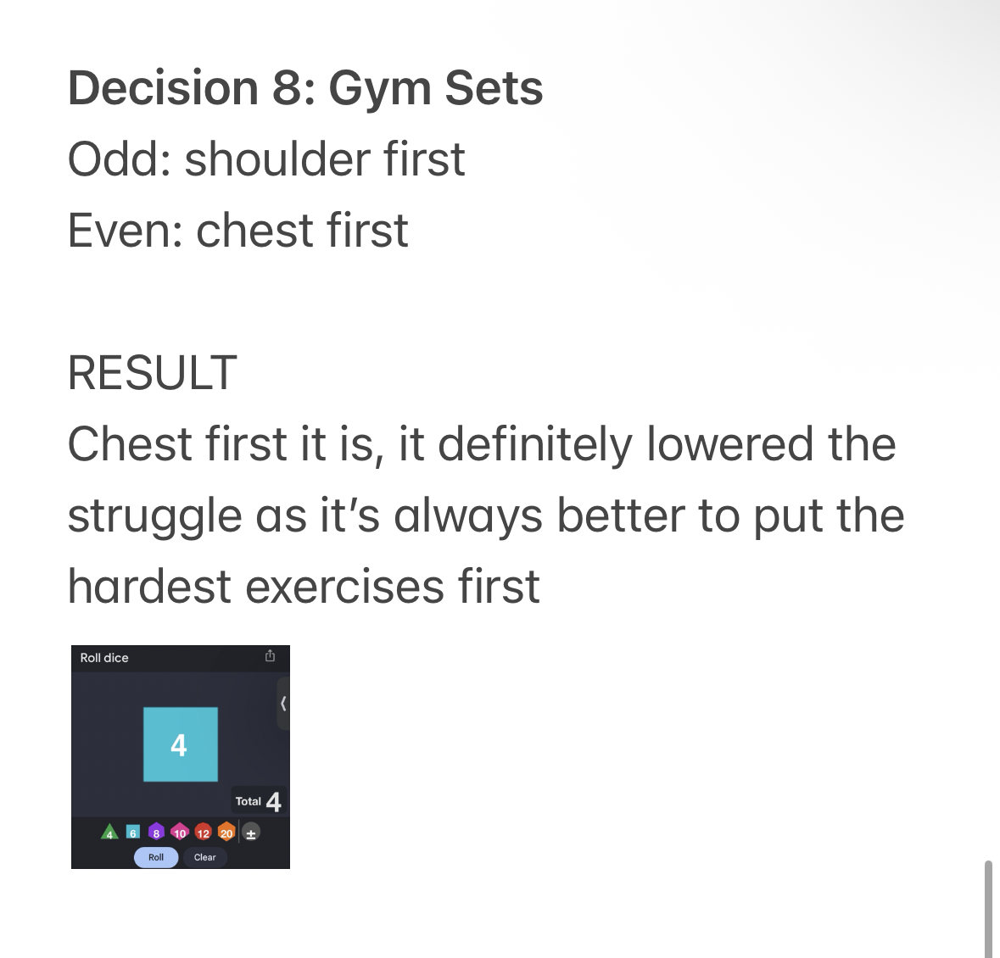
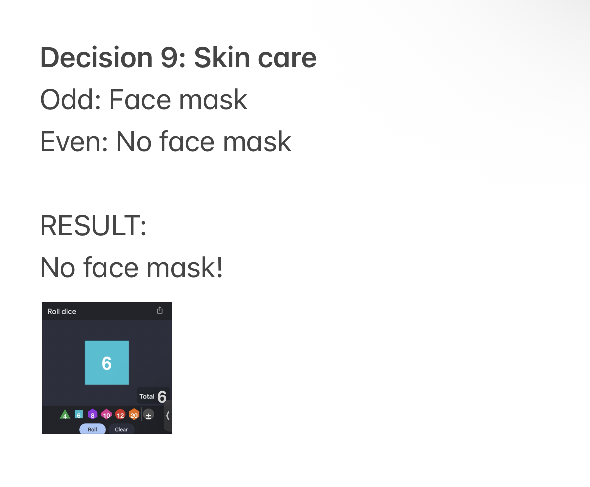
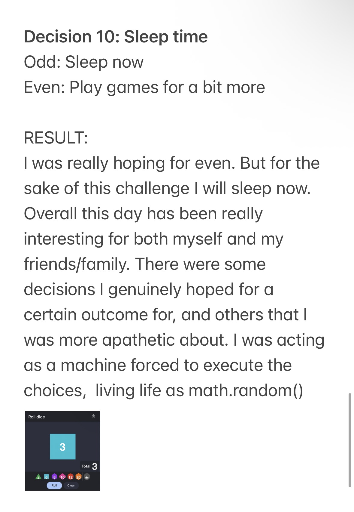

For this exercise, every decision in my day was handed over to a random number generator. Small things I usually navigate on autopilot were suddenly up for deliberation, then taken out of my control.
What surprised me was how much resistance I felt for events I genuinely had preferences for, like what to eat. Despite all of this, I'm not a big dicision maker, so it felt fun to let the day go on by randomised choices.
But I can imagine if I were to live like this consistently, it would cause a lot of frustration and friction to have your life determined by algorithm. For example, being forced to take a bus that comes later on your way to work, or not being able to get the dish you wanted to order.









